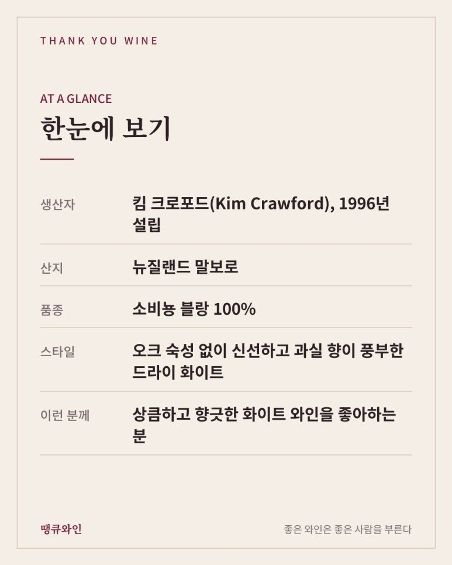
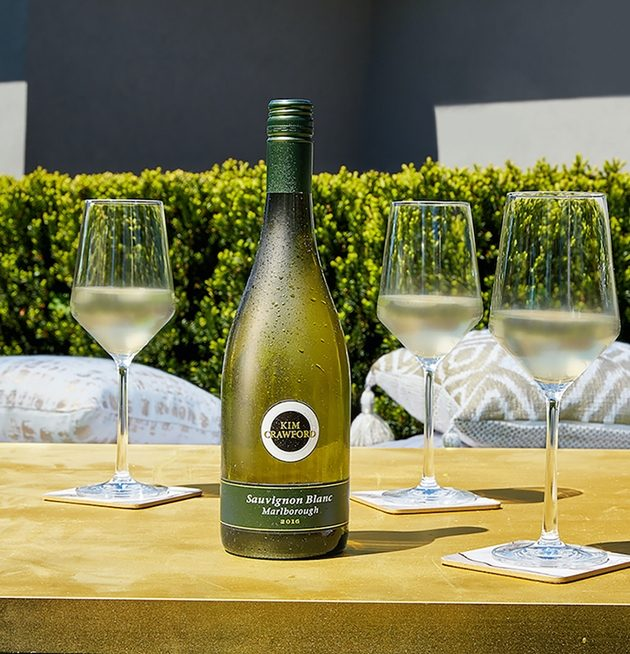
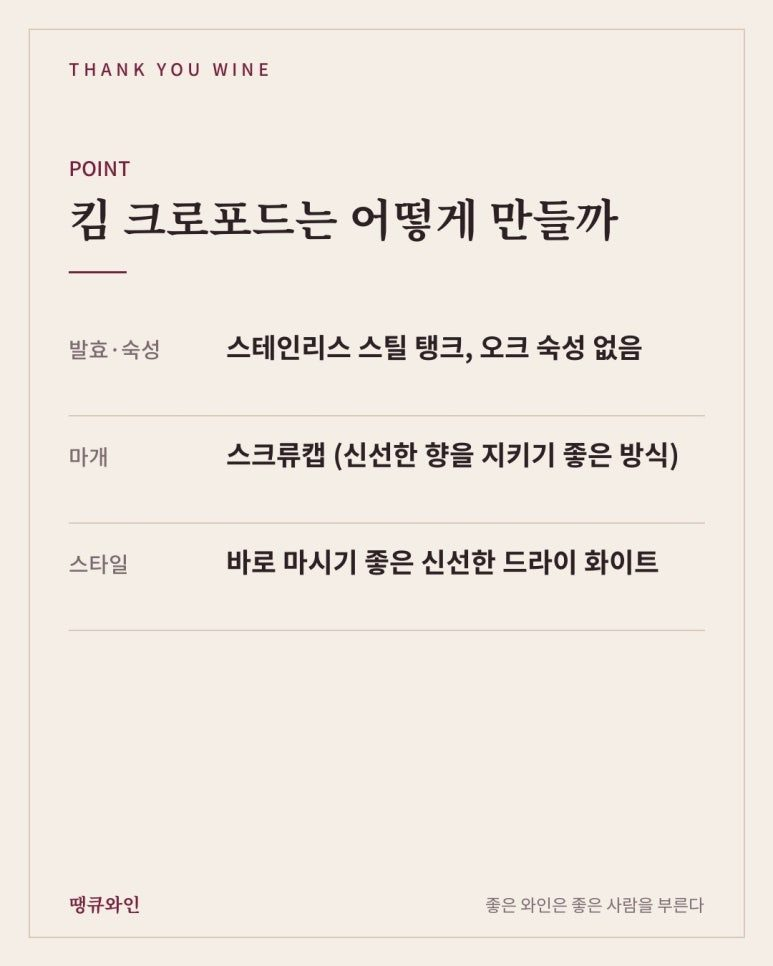
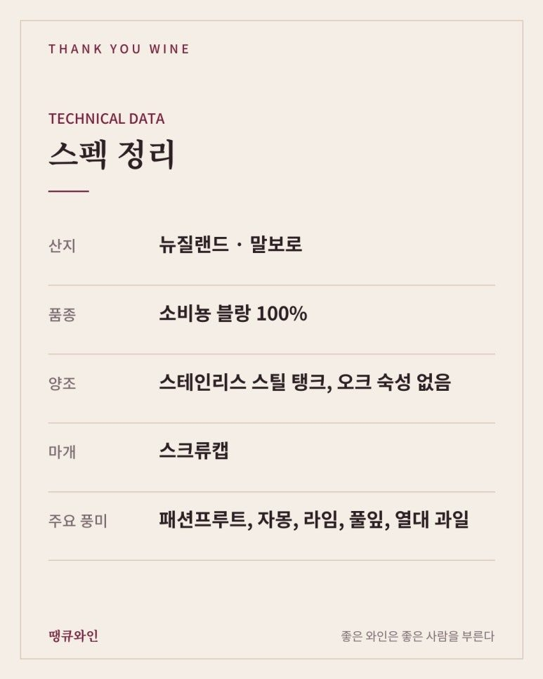
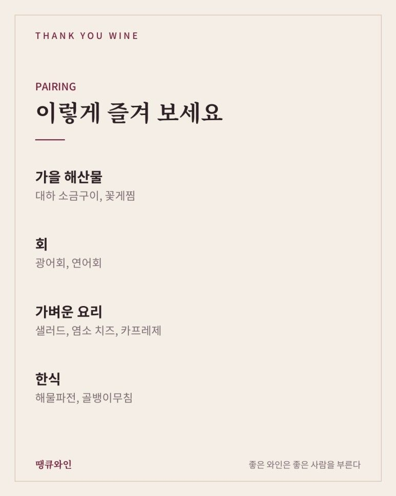
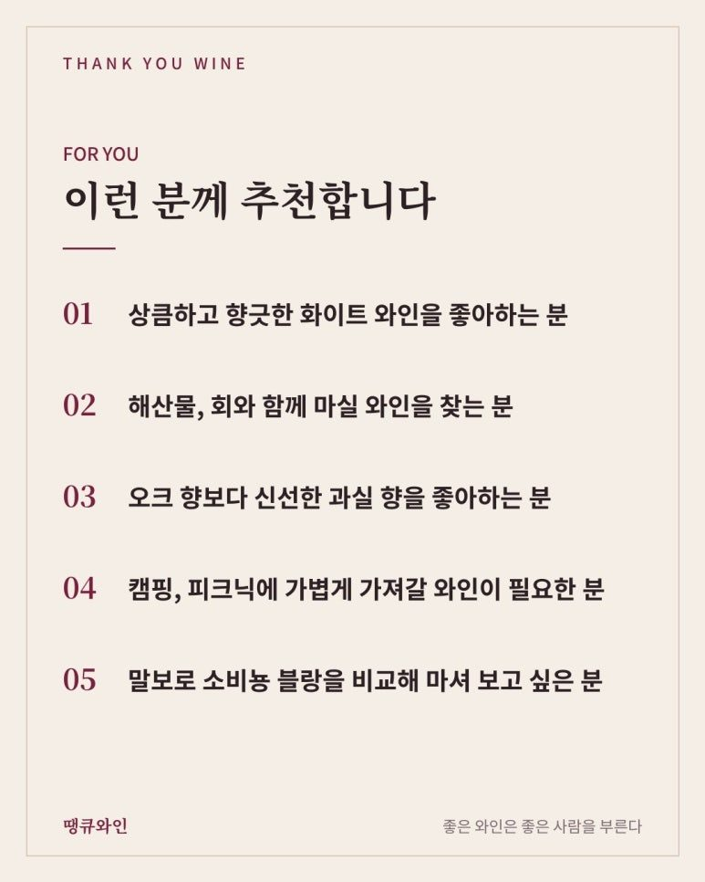

킴 크로포드 소비뇽 블랑
와이너리 없이 시작해 미국 판매 1위가 된 뉴질랜드 화이트
킴 크로포드 소비뇽 블랑은 1996년 뉴질랜드 말보로에서 와이너리 없이 시작해 미국 판매 1위 뉴질랜드 와인이 된 소비뇽 블랑 100% 화이트예요. 오크 숙성 없이 신선하고 과실 향이 풍부해 상큼한 화이트와 해산물 안주를 좋아하는 분께 맞아요.
포도밭도, 양조장도 없이 와인 브랜드를 시작할 수 있을까요?
1996년 뉴질랜드 오클랜드의 한 집에서, 한 와인메이커가 실제로 그렇게 시작했습니다.
그리고 이 와인은 지금 미국에서 가장 많이 팔리는 뉴질랜드 와인이 되었죠.
오늘 소개할 와인은 바로 킴 크로포드 말보로 소비뇽 블랑(Kim Crawford Marlborough Sauvignon Blanc)입니다.
상큼한 화이트 와인을 좋아하는 분이라면, 한 번쯤 꼭 만나봐야 할 와인이에요.

한눈에 보는 킴 크로포드 소비뇽 블랑
- 생산자: 킴 크로포드(Kim Crawford), 1996년 설립
- 산지: 뉴질랜드 말보로
- 품종: 소비뇽 블랑 100%
- 스타일: 오크 숙성 없이 신선하고 과실 향이 풍부한 드라이 화이트
- 이런 분께: 상큼하고 향긋한 화이트 와인을 좋아하는 분
킴 크로포드는 어떻게 시작했을까?
킴 크로포드는 뉴질랜드의 와인메이커 킴 크로포드와 아내 에리카가 1996년에 시작한 브랜드입니다.
재미있는 점은, 처음에는 포도밭도 양조장도 없었다는 것인데요.
바인페어에 따르면 킴 크로포드는 오클랜드의 집을 사무실 삼아, 여러 농가에서 포도를 사들이고 다른 양조 시설을 빌려 와인을 만들었습니다.
그래서 킴 크로포드는 흔히 ‘가상 와이너리(Virtual Winery)’로 시작한 브랜드로 소개됩니다.
땅과 건물에 큰돈을 들이는 대신, 좋은 포도를 고르고 좋은 와인을 만드는 데만 집중한 셈이죠.
어떻게 세계적인 브랜드가 되었을까?
킴 크로포드는 1998년부터 미국으로 수출을 시작했습니다.
마켓 워치에 따르면 2006년 콘스텔레이션 브랜즈가 인수한 뒤 빠르게 성장해, 미국 판매량이 2008년 약 29만 상자에서 2018년 약 130만 상자까지 늘어났습니다.
지금은 미국에서 가장 많이 팔리는 뉴질랜드 와인이자, 미국에서 가장 많이 팔리는 소비뇽 블랑으로 꼽힙니다.
2019년과 2020년에는 테니스 대회 US 오픈의 공식 와인으로 선정되기도 했어요.
그래서 킴 크로포드는
작은 집에서 시작한 도전 + 말보로의 상큼함 + 세계가 인정한 인기
를 함께 가진 와인이라고 할 수 있습니다.

말보로 소비뇽 블랑은 왜 특별할까?
뉴질랜드 남섬 북쪽의 말보로(Marlborough)는 소비뇽 블랑으로 세계적인 명성을 얻은 산지입니다.
햇살은 풍부하지만 밤에는 서늘한 기후 덕분에, 포도가 천천히 익으면서 향은 풍부하게, 산미는 생생하게 지켜집니다.
그래서 말보로 소비뇽 블랑은 프랑스나 미국의 소비뇽 블랑보다 패션프루트, 자몽 같은 향이 훨씬 선명하고 화사한 것이 특징입니다.
땡큐와인에서 소개했던 클라우디베이도 바로 이 말보로 소비뇽 블랑의 대표 와인 중 하나인데요.
같은 산지, 같은 품종이라도 생산자마다 스타일이 조금씩 달라서, 두 와인을 나란히 놓고 비교해 마셔 보는 재미도 있습니다.

킴 크로포드는 어떻게 만들까?
킴 크로포드 소비뇽 블랑은 오크통을 쓰지 않고 스테인리스 스틸 탱크에서 만들어집니다.
오크 향을 더하지 않는 대신, 포도 본연의 상큼한 과실 향과 산미를 그대로 살리는 방식이죠.
- 발효·숙성: 스테인리스 스틸 탱크, 오크 숙성 없음
- 마개: 스크류캡 (신선한 향을 지키기 좋은 방식)
- 스타일: 바로 마시기 좋은 신선한 드라이 화이트

스크류캡이라 오프너 없이 바로 열 수 있어서, 캠핑이나 피크닉에 가져가기도 편한 와인입니다.
킴 크로포드 소비뇽 블랑 테이스팅 노트
잔에 따르면 맑고 연한 레몬색이 먼저 보입니다.
향에서는 패션프루트, 자몽, 라임 같은 상큼한 과일 향이 먼저 올라오고, 갓 자른 풀잎 같은 싱그러운 향이 이어집니다.
입안에서는 생생한 산미가 입맛을 깨워 주고, 열대 과일 풍미와 함께 깔끔하게 마무리됩니다.
한 모금 마시면 기분까지 산뜻해지는, 말보로 소비뇽 블랑다운 매력이 가득한 와인이에요.
KIM CRAWFORD SAUVIGNON BLANC
- 산지: 뉴질랜드 · 말보로
- 품종: 소비뇽 블랑 100%
- 양조: 스테인리스 스틸 탱크, 오크 숙성 없음
- 마개: 스크류캡
- 주요 풍미: 패션프루트, 자몽, 라임, 풀잎, 열대 과일

킴 크로포드 소비뇽 블랑과 어울리는 음식은?
산뜻한 산미 덕분에 해산물과 가벼운 요리에 특히 잘 어울립니다.
땡큐와인에서 추천한다면 이런 메뉴와 함께 즐겨보겠습니다.
• 가을 해산물: 대하 소금구이, 꽃게찜
• 회: 광어회, 연어회
• 가벼운 요리: 샐러드, 염소 치즈, 카프레제
• 한식: 해물파전, 골뱅이무침

특히 대하 소금구이와 킴 크로포드의 조합을 추천드립니다.
달큰하고 고소한 가을 대하에 와인의 상큼한 산미와 시트러스 향이 더해지면, 마치 레몬을 뿌린 것처럼 맛이 한층 살아나거든요.
킴 크로포드 소비뇽 블랑, 이런 분께 추천합니다
• 상큼하고 향긋한 화이트 와인을 좋아하는 분
• 해산물, 회와 함께 마실 와인을 찾는 분
• 오크 향보다 신선한 과실 향을 좋아하는 분
• 캠핑, 피크닉에 가볍게 가져갈 와인이 필요한 분
• 말보로 소비뇽 블랑을 비교해 마셔 보고 싶은 분

자주 묻는 질문
Q. 킴 크로포드 소비뇽 블랑은 단맛이 있나요?
A. 단맛이 거의 없는 드라이 화이트 와인입니다. 과일 향이 풍부해서 마실 때 은은하게 달콤한 느낌이 들 수는 있어요.
Q. 몇 도로 마시면 좋을까요?
A. 8~10도 정도로 차갑게 마시는 것을 추천드립니다. 냉장고에서 2~3시간 충분히 칠링해 주세요.
Q. 오래 보관했다가 마셔도 되나요?
A. 신선한 과실 향이 매력인 와인이라, 구입 후 1~2년 안에 마시는 것이 가장 좋습니다.
결국 킴 크로포드의 매력은 ‘신선함’입니다
킴 크로포드 소비뇽 블랑은 포도밭도 양조장도 없이 시작했지만, 좋은 포도와 신선한 맛 하나로 세계적인 사랑을 받게 된 와인입니다.
그래서 저는 이 와인을
“한 모금에 말보로의 햇살과 바람이 느껴지는 화이트”
라고 소개하고 싶습니다.
선선한 가을 저녁, 대하 소금구이와 함께 킴 크로포드 한 잔으로 산뜻한 하루를 마무리해 보세요.
이 글은 땡큐와인 네이버 블로그에 먼저 올린 글이에요.